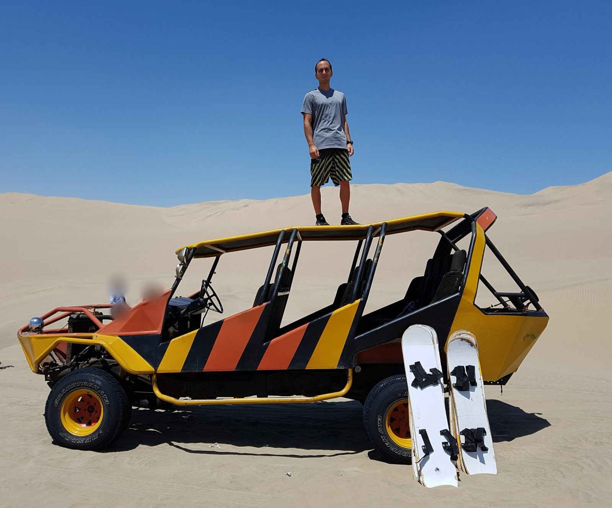
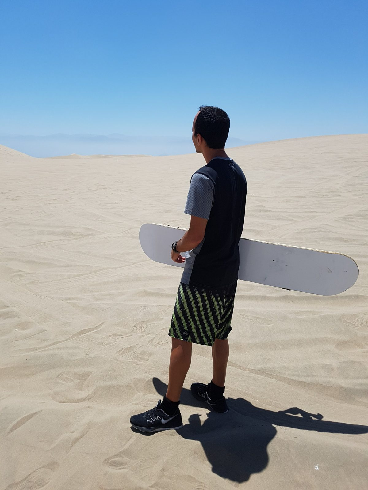

South America · Peru · Ica · Huacachina
Huacachina, September 2017
The vehicle in my photos is a "tubular" buggy: a hand-built frame with seats, used for dune tours. Since I rode one, these vehicles have been at the centre of a safety dispute in Ica.
- May 2025: a US tourist died when a vehicle rolled over during a sandboarding trip, according to the Ica prosecutor (La República, October 3, 2025). In the same statement the prosecutor warned that these vehicles are built by hand, do not meet current technical rules and lack the authorisation to operate in the desert.
- July 18, 2026: a tubular rolled over three times on a tour. Ten people were hurt and a US tourist lost an arm (Infobae, July 21, 2026). The regional tourism office said the service was operating illegally, and TV Perú reported a ban on assembled tubular vehicles for tourist rides (TV Perú, July 23, 2026).
- September 2026: prosecutors and police inspected the vehicles, and more than 400 informal units were taken out of circulation (Infobae, September 13, 2026). Tours stopped for about a week and restarted on September 22. The transport ministry said it had not authorised the restart (Infobae, September 23, 2026).
That is the latest I could find. Reports conflict on whether operations were formally banned, so I cannot tell you what is allowed today. Please check before you book.
What the prosecutor's office asks tourists to check: that the service has authorisation from the Ica provincial municipality, that the SOAT insurance is current, and that the company gives truthful information. Do not board an overloaded vehicle, or one carrying fuel in improvised containers. Irregularities can be reported to the police on 105 (Panamericana). The national rules for these vehicles require four-point seatbelts, an anti-rollover cage and headrests (TV Perú), so look for them before you get in.
The day
I spent the morning of Thursday, September 28 on the Huacachina dunes. I booked the buggy and sandboarding trip through the travel stand at Hostel Rivendell, as I did for most of my trips in Peru. I do not remember the price or the company, so I will not guess. The photos below were taken between 10:50 and 11:20 by my camera's clock, and Google Photos places them in the Huacachina Lagoon reserved zone. The next day I was in Cusco, after a flight from Lima.
Getting there and staying
I believe I took a bus from Lima, though I do not remember the company. I stayed overnight in Ica in a nice place, but I no longer remember its name, so I will not recommend one.
Public bus: Cruz del Sur, Oltursa and Soyuz run buses to Ica. Lima has no central bus station, so each company leaves from its own terminal. The ride is about 4.5 to 5.5 hours without traffic, and one guide lists tickets at USD 15 to 30 depending on operator and seat (Bus Hop, updated September 12, 2026).
The last stretch: no public bus goes into Huacachina. From the Ica terminal, a taxi or mototaxi takes about 15 to 20 minutes and is listed at USD 4 to 5 (same source). Another guide gives 10 to 15 minutes (The Only Peru Guide, updated May 2026).
Hop-on, hop-off: Peru Hop is the one service listed that drives into the oasis and picks up at hotels and hostels in Lima. I could not find its current price. Both sources above are travel sellers, so compare fares directly with the companies.
On the dunes

What I wore, and what I would bring
I wore a t-shirt, shorts and sports shoes, as in the photos. Sunglasses would have been worth having. Bus Hop's 2026 guide also suggests a neck buff and light layers for the cooler hours, plus small bills for the local tax and tips (Bus Hop, updated January 2026).

Prices and timing, as listed before the 2026 stoppage
In January 2026, Bus Hop listed a standard group trip with a buggy and sandboarding at about $18 to $25 per person for around two hours, with the boards included, and a private buggy at $100 to $195 per vehicle. A local tax of about 4 soles was mentioned at Huacachina. The same guide recommends going late in the afternoon, roughly 16:00 to 18:00, for the light and the cooler air. My own photos are from the morning. Treat these prices as a reference only, because the market changed after the July and September 2026 events above.
What I would do differently
I would do it independently, not through an agency stand: choose the operator myself, ask to see the vehicle and its documents, and walk away from a vehicle that does not have working seatbelts. Given the news above, I would also check the current rules before paying anyone.
Getting here from Lima by bus is covered in the Lima chapter.
Previous: Laguna Parón.